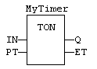
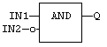
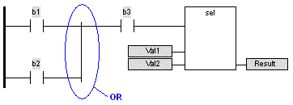

A Function Block Diagram is a data flow between constant expressions or variables and operations represented by rectangular blocks. Operations can be basic operations, function calls , or function block calls .
The name of the operation or function, or the type of function block is written within the block rectangle. In case of a function block call, the name of the called instance must be written upon the block rectangle, such as in the example below:

The data flow may represent values of any data type. All connections must be from input and outputs points having the same data type. In case of a Boolean connection, you can use a connection link terminated by a small circle, that indicates a Boolean negation of the data flow.
Use of a negated link: Q is IN1 AND NOT IN2!

The data flow must be understood from the left to the right and from the top to the bottom. It is possible to use labels and jumps to change the default data flow execution.
LD symbols may also be entered in FBD diagrams and linked to FBD objects. Refer to the following sections for further information about components of the LD language:
Special vertical lines are available in FBD language for representing the merging of LD parallel lines. Such vertical lines represent a OR operation between the connected inputs. Below is an example of an OR vertical line used in a FBD diagram:
